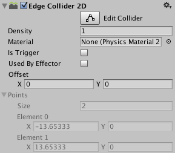

Edge Collider 2D
The Edge Collider 2D component is a Collider for use with 2D physics. The Collider's shape is defined by a freeform edge made of line segments, so you can adjust it to fit the shape of the Sprite graphic with great precision. Note that this Collider's edge need not completely enclose an area (unlike the similar Polygon Collider 2D), and for example can be a straight line or an L-shape.

| Property | Function |
|---|---|
| Material | A physics material that determines properties of collisions, such as friction and bounce. |
| Is Trigger | Tick this box if you want the Collider to behave as a trigger. |
| Used by Effector | Whether the Collider is used by an attached effector or not. |
| Offset | The local offset of the Collider geometry. |
| Edge Radius | Controls a radius around edges, so that vertices are circular. This results in a larger Collider 2D with rounded convex corners. The default value for this setting is 0 (no radius). |
| Points | Non-editable information about the complexity of the generated collider. |
Details
To edit the polyline directly, hold down the Shift key while you move the mouse over an edge or vertex in the Scene view. To move an existing vertex, hold down the Shift key and drag that vertex. To create a new vertex, hold down the Shift key and click where you want the vertex to be created. To remove a vertex, hold down the Ctrl (Windows) or Cmd (macOS) key and click on it.
To hide the outline of the 2D move Gizmo while editing the Collider, click the fold-out arrow on the Sprite Renderer component in the Inspector to collapse it.